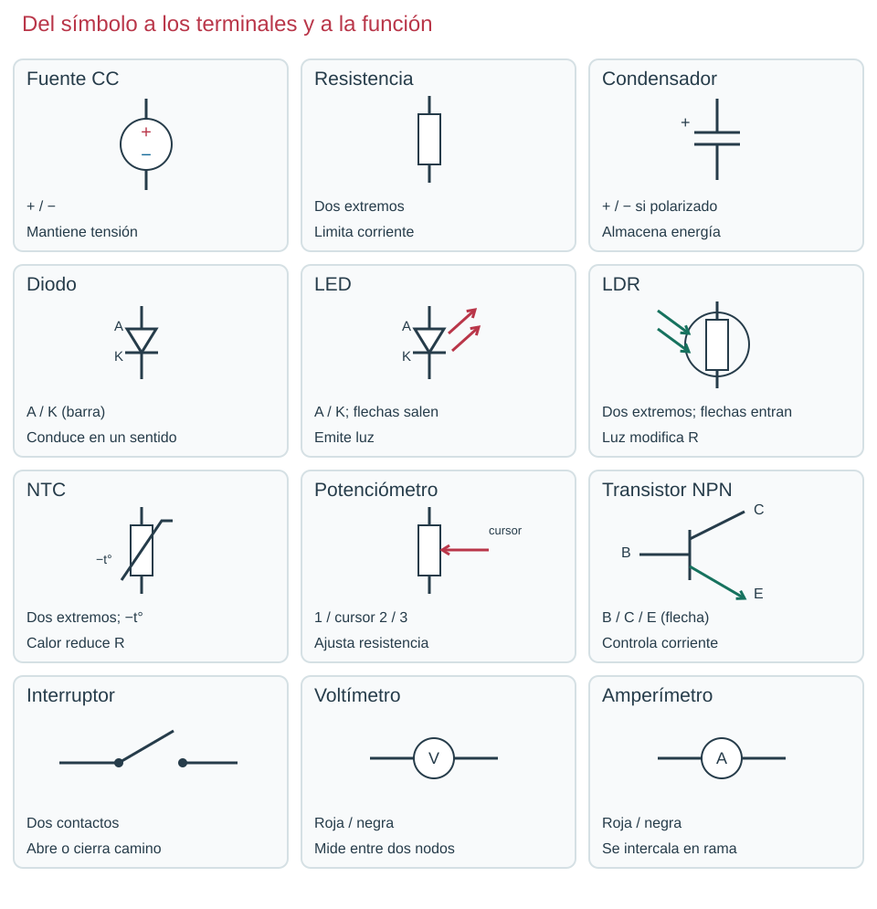
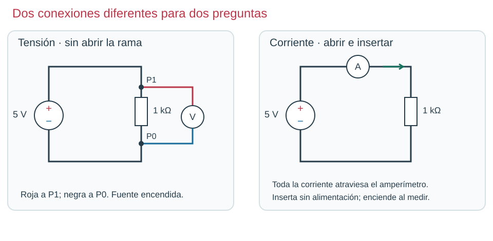
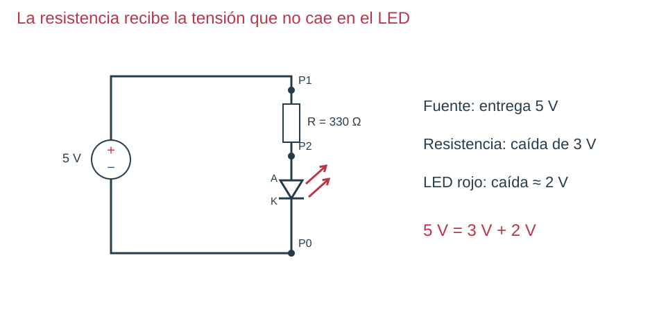
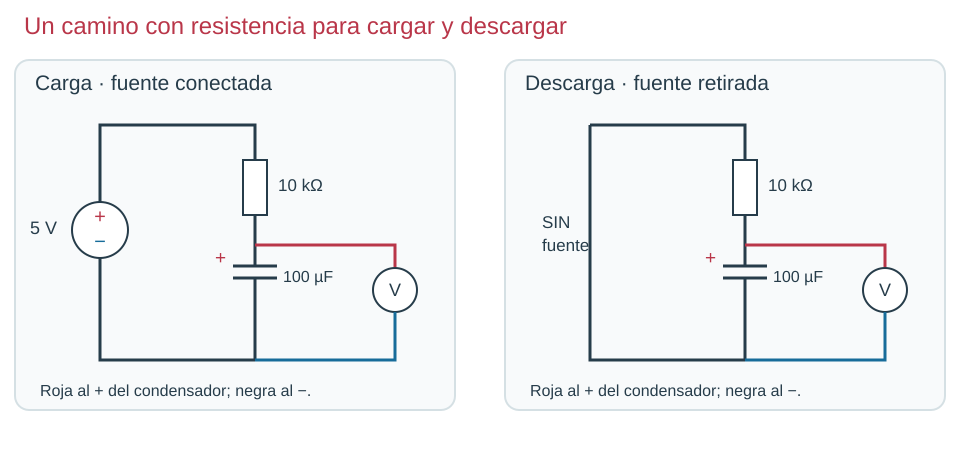
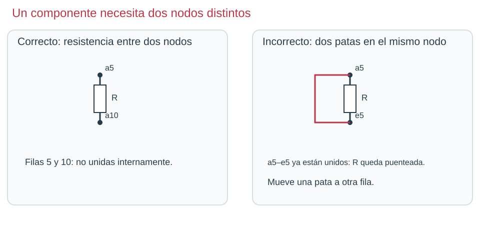
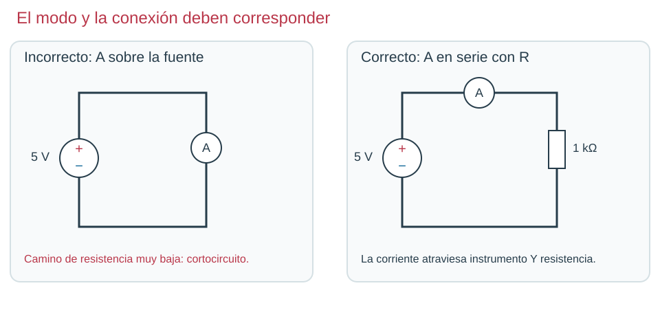

Contenido
Catálogo visual para consultar
El aspecto permite encontrar la pieza; el símbolo permite leer su función y conexiones. No deduzcas patillas físicas a partir de la posición del símbolo.

Fórmulas y dónde se aplican

V = I · R
Para calcular la intensidad: I = V / R
Para calcular la resistencia: R = V / I
En el circuito de medida: P1 y P0 son los extremos de la resistencia.
| Magnitud | Símbolo | Unidad | Dónde y cómo se obtiene |
|---|---|---|---|
| Tensión | V | voltio (V) | V ⎓; roja P1, negra P0; en paralelo. |
| Intensidad | I | amperio (A) | A ⎓; abrir la rama e intercalar el instrumento sin fuente. |
| Resistencia | R | ohmio (Ω) | Ω; pieza aislada y sin alimentación, una punta en cada extremo. |
Para resistencias óhmicas. Convierte mA a A antes de sustituir.

Vsalida = Ventrada · R₂ / (R₁ + R₂)
En el divisor: R₁ une + de la fuente con S; R₂ une S con 0 V.
| Magnitud | Símbolo | Unidad | Dónde y cómo se obtiene |
|---|---|---|---|
| Entrada | Ventrada | voltio (V) | V ⎓; roja al + de la fuente, negra a 0 V. |
| Salida | Vsalida | voltio (V) | V ⎓; roja S, negra 0 V; sobre R₂. |
| Resistencia superior | R₁ | ohmio (Ω) | Entre + y S; medir aislada, en Ω y sin fuente. |
| Resistencia inferior | R₂ | ohmio (Ω) | Entre S y 0 V; medir aislada, en Ω y sin fuente. |
Salida sin carga apreciable; si hay RL, sustituye R₂ por el equivalente R₂ ∥ RL. Usa la misma unidad en ambas resistencias.

R = (Vfuente − VLED) / I
Con la resistencia elegida: I = (Vfuente − VLED) / R = VR / R
En la rama LED sin transistor: P1 → resistencia → P2 → LED → P0.
| Magnitud | Símbolo | Unidad | Dónde y cómo se obtiene |
|---|---|---|---|
| Alimentación | Vfuente | voltio (V) | V ⎓; roja P1, negra P0. |
| Caída en LED | VLED | voltio (V) | V ⎓; roja P2, negra P0. |
| Caída en resistencia | VR | voltio (V) | V ⎓; roja P1, negra P2. |
| Intensidad deseada | I | amperio (A) | Dato de diseño; al comprobar, calcular con VR/R. |
| Resistencia serie | R | ohmio (Ω) | Entre P1 y P2; medir aislada y sin fuente. |
Esta fórmula corresponde a la rama LED sin transistor; VLED es una estimación dependiente del componente.

τ = R · C
En el circuito RC: sigue la resistencia del camino de carga o descarga; mide VC entre + y − del condensador.
| Magnitud | Símbolo | Unidad | Dónde y cómo se obtiene |
|---|---|---|---|
| Constante de tiempo | τ | segundo (s) | Se calcula; en la curva, tiempo para alcanzar el 63 % de la carga o conservar el 37 % en descarga. |
| Resistencia del camino | R | ohmio (Ω) | Medir la pieza aislada, en Ω y sin fuente. |
| Capacidad | C | faradio (F) | Leer el valor del condensador; convertir µF a F. No se mide en modo Ω. |
| Tensión del condensador | VC | voltio (V) | V ⎓; roja al + de C, negra al −; en paralelo. |
R en Ω y C en F. Aproximadamente 5τ para completar casi todo el cambio.
| Asociación | Relación | Condición |
|---|---|---|
| Serie | Rserie = R₁ + R₂ | Sin derivaciones entre ambas: misma corriente. |
| Paralelo | Rparalelo = R₁ · R₂ / (R₁ + R₂) | Dos resistencias conectadas entre los mismos dos nodos. |
Conversiones: 1 kΩ = 1000 Ω; 1 mA = 0,001 A; 1 µF = 0,000001 F. Antes de sustituir, escribe la conversión. En cada capítulo tienes el esquema y el ejemplo desarrollado correspondiente.
Errores visibles, comprobaciones concretas


| Síntoma | Posible causa | Comprobación |
|---|---|---|
| Cero en el voltímetro | Ambas puntas en el mismo nodo | Identifica nodos; roja en punto de interés, negra en referencia. |
| Salida del divisor inferior a la prevista | Hay carga conectada | Compara antes/después de conectar la base, apagando al modificar. |
| LED apagado | Polaridad, rama abierta o falta de mando | Revisa A/K, continuidad sin fuente y luego VCE. |
| RC parece instantáneo | Unidad de C o escala temporal incorrecta | Convierte µF a F y compara en segundos sobre eje común. |
| Sensor no da grados | Solo se ha medido resistencia | Necesitas la curva del componente; no inventes temperaturas. |
Nodo: puntos unidos por conductor. Rama: camino entre nodos. Polaridad: orientación de tensión o terminales. Corte: transistor prácticamente sin corriente de colector. Saturación: estado con tensión C–E pequeña bajo mando suficiente. Histéresis: diferencia entre condiciones de encender y apagar; los detectores básicos no la incorporan de forma controlada.
Material elaborado por José Luis García · IES El Majuelo. Ilustraciones, anotaciones y modelos didácticos propios, CC BY-SA 4.0. Las capturas muestran la interfaz de Autodesk Tinkercad; sus marcas y elementos de interfaz corresponden a su titular. Un modelo orienta la comprensión; no sustituye al ensayo con los componentes reales.